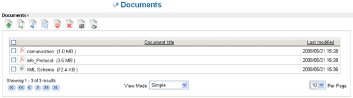

Document Management |
Click on Documents, the fourth item in the navigation menu. The central part of the
page is now occupied by the documents, which are organized into folders and subfolders
(similar organization in a normal disk of your PC).
Folder navigation is simply done by clicking on the name of the folder in
the list of folders on the left side. The user can scroll through the list of documents that are inside the selected folder in 4 possible views:
- 1) Simple: for each document are displayed only the title and the last modified date.
- 2) Details: for each document are displayed the protocol, the title, the last modified date, the author and size.
- 3) Medium icons: for each document is displayed an image of medium size.
- 4) Large icons: for each document is displayed an image of big size.

Picture 3: Documents and folders (simple)
Picture 4: Documents and folders (details)
Picture 5: Documents and folders (medium icons)
Now click on the folder Documents and then on the icon 1.1 (placed on top of the panel containing the list of folders). Enter "test" as the name of the folder and press the Save button. A message will warn you that a new folder has been created.
Picture 6: Folder creation
You should now see that the new folder has been created. Click on its name in order
to enter it. Note that at the top of the main area a so-called ‘breadcrumb’ keeps track
of the route of the folder.
Now insert a new document by clicking on the icon 2.1.
Initially, you are asked for the file to upload and the language in which the document has been written in.
To upload a file, simply press the Browse... button then select a file from your PC and press the Upload button. A progress bar will display the status of the
upload process.
The language specification is done through the drop-down list and
it is important since it affects the indexing engine of the documents content.
In addition to that, there are two checkboxes available: if the first is checked,
LogicalDOC retrieves immediately the tags of the document; if the second is
checked, LogicalDOC does the immediate indexing of the document.
Once the document has been uploaded, you can proceed to the next step by selecting the button Next >>>. Some information are extracted, and a form for document editing is displayed for final assessment. At this stage you can change various parameters of the document, but only if you have the editing
permission. The page is divided into 3 tabs:
- 1) General: includes all general information about the document and the most important parameter is Tags, as these can be used later for document research. Each tag (keyword), in fact, allows classify a document.
- 2) Source: displays number of fields, including author, source, object and recipient.
- 3) Template: shows the document template and document custom attributes.
Picture 7: Document's editing form
By clicking on Save, the document will be stored and indexed.
Right after the upload, you will be directed to the same folder in which the newly uploaded document is located. You can then download the document by clicking on
it.
LogicalDOC will not allow two documents with the same name inside the same
folder; for example, if you try to insert a document named "doc" in the "test" folder,
and there already exists a document named “doc”, the new document will be
automatically renamed to "doc(1)".
Picture 8: Contextual menu
By right-clicking on the document, a contextual menu will appear.
It provides access to major management functions on the single document such as ‘checkout’ or ‘edit’.
| Users should be always very careful when erasing files and folders since the removal of them is not a reversible process and the data will be lost forever. However, in the Enterprise edition, users can recover deleted files. | |